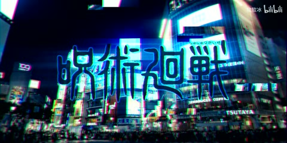

← 案例图谱H48 / 主要视觉研究样本
【影视飓风七百万粉丝混剪】“要自己去迭代，去不断的进步！”
小壕h · 1.4万播放快照 · <10万 · B站原作 ↗
访谈引入、作品与幕后、群像三联、品牌字卡再回访谈形成概览可见结构；同一团队素材风格一致，同时带来样本相关性。
 约21.000秒 · 案例代表帧
约21.000秒 · 案例代表帧从画面里找依据
这一例先看什么
访谈引入、作品与幕后、群像三联、品牌字卡再回访谈形成概览可见结构；同一团队素材风格一致，同时带来样本相关性。
审美判断
居中项目名称/日期与底部对白分层清楚；三联画段每栏人物保留面部主体，不能将三个并排人物看成三个独立切镜。
迁移到自己的题材
纪念混剪、品牌回顾、旅行、纪录短片、情绪随笔、多来源素材的主题表达。
教学提问：两个镜头为什么必须相邻？是共享意象、动作阶段、色彩，还是只是都很好看？
带画面的分析单元
图像标出取样时间，对应观察中的关键状态。单帧不能独立证明运动，连续性请结合摘录。表达作用与应用场景是教学解读，复现路线是建议，不是原作者工程还原。
分析单元 01 / 0—21秒
黑场开篇／访谈节选／居中作品名与日期
实际观察
0秒黑场底部短字幕，3–12秒沙发人物，6秒中心叠作品名/日期；15–18秒转红色舞台、飘落红纸和彩烟，21秒产品特写。标题日期与底部对白是分开的文字层风格。
表达作用（教学解读）
把阅读顺序变成观看顺序；用字重、位置与停留表达强调、犹豫或压迫。
具体应用场景
观点短片、歌词视觉、人物宣言、章节、情绪高潮；先决定哪些词必须读懂，哪些只是纹理。
复现建议（非原作者工程还原）
剪取讲话与项目镜头，中心标题与日期用定时白色文字，底部对白另排；彩烟、纸屑、舞台是源素材内容，简化颗粒可叠素材，真实烟雾需拍摄/模拟。
直出判断：现成素材剪接、黑场和叠字容易；烟雾与舞台制作不能归为简单剪辑直出
常见误用：每个字都弹跳、整句停留不足、所有文字同时争主位。严肃叙事里无理由的回弹会削弱重量。
分析单元 02 / 24—34.5秒
钞票图案到同题材实景／暖白闪转场
实际观察
24–30秒钞票纹理与建筑近景，30.52–31.96秒仍是绿色印刷布达拉宫，32.08秒暖色亮斑，32.2秒近白过曝，32.32秒已是布达拉宫实景。建筑轮廓关联形成图案/实物对应，未精确逐像素匹配。34.48秒又硬切夜间火花。
表达作用（教学解读）
短暂中断视觉连续性，强调接触、转折或心理断裂；其价值来自前后的对比。
具体应用场景
打击点、快速连接、记忆跳跃、段落转折；需要根据内容选择强度。
复现建议（非原作者工程还原）
选同一地标的纸面细节和实景，缩放构图对齐，边界叠暖色漏光、快速高亮再恢复；无需假设复杂形变。来源为原拍摄作品，不能确认该转场由混剪UP新增。
直出判断：有配对素材时容易，构图相差大时需裁切调节
常见误用：把闪烁当节奏本身；没有稳定画面作参照；为掩盖动作不清持续加闪。
分析单元 03 / 36—66秒
火花摄影／幕后与成片交替／访谈分屏
实际观察
36秒橙色火花，39–42秒幕后人物和监视器，45–48秒海岸与帆船，51–57秒沙发访谈及左右视频会话版式，60–66秒雪景人物、面部与火箭镜头。原视频的摄影、访谈画面与混剪剪接需区分。
表达作用（教学解读）
让多个时间、视角或人物关系同时出现；通过对位建立联系，而非只提高画面数量。
具体应用场景
记忆、对话、关系对照、主观视点、多人角色介绍、跨素材呼应。
复现建议（非原作者工程还原）
从项目成片和幕后镜头挑对应段落，以硬切和景别差异连接；简化分屏通过矩形裁切和并排定位。火花、海景、火箭等需现成授权素材或拍摄。
直出判断：剪接与分屏容易；高质量摄影、特种镜头不属于后期一键生成
常见误用：窗口太多无主次，眼位错位、边框挤脸，层的出现没有叙事理由。
分析单元 04 / 69—84秒
点云式房间／金色散粒／冷暖空间光
实际观察
69–84秒反复出现青绿色窗光与金色颗粒组成的房间/人物空间，75秒穿插蓝色发光自然画面。页面内标题声称点数，但本次不核查点云数量、扫描方式或原团队工具。
表达作用（教学解读）
把可控规则变成可见变化；通过不变量、比例和相位建立秩序或空间。
具体应用场景
概念解释、音乐可视化、抽象世界、图表、程序艺术。
复现建议（非原作者工程还原）
有3D点云时相机渲染顶点/小粒子，按深度与区域着色；简单二维粒子蒙版只能近似视觉，无法恢复真实空间视差。此视觉来自原作品材料，独立作者归属未核验。
直出判断：二维散粒近似可实现；三维空间、数据获取和镜头设计需素材或专门制作
常见误用：符号无含义；空间复杂度替代概念清晰；将程序生成误等同于文生视频生成。
分析单元 05 / 105.3—111秒
白闪进三联画／三竖栏人物群像快切
实际观察
105.32–105.8秒人物操作摄影机，105.88秒白闪，105.96秒三竖栏人物群像；106.44、106.84秒三栏整组换人。109秒起同三栏布局，109.08、109.56、110.2、110.76秒整组替换。人物持物、表情和小动作发生在各栏内，不各算一刀。
表达作用（教学解读）
通过变化与稳定的比例让信息有轻重。视觉密度来自切镜、版式与局部动画三个层面，不只靠刀数。
具体应用场景
所有形式；尤其高潮前的蓄力、解释段的阅读、回忆段的停留和快慢对照。
复现建议（非原作者工程还原）
三条人物视频分别裁切为等宽竖栏并排，同组同时切换；首组前加短白闪，字幕跨底部统一排版。未对比原片，不能断定三栏版式由混剪UP新增。
直出判断：素材齐备时很容易代码直出；人物抠图并非必要，背景可保留
常见误用：全片等密度；把闪帧当新镜；高切速被当成质量分；没有稳定段供观众理解。
分析单元 06 / 117—144秒
群像接品牌字卡／末段访谈回扣／黑底小字署名
实际观察
117–120秒继续三联人物展示，123秒黑底白色无限进步字样，126–132秒沙发人物与问题贴片，135–138秒户外拍摄幕后，141–144秒黑场淡色文字/署名。片中用户评论贴片仅作版式证据，不在报告转录其个人内容。
表达作用（教学解读）
把阅读顺序变成观看顺序；用字重、位置与停留表达强调、犹豫或压迫。
具体应用场景
观点短片、歌词视觉、人物宣言、章节、情绪高潮；先决定哪些词必须读懂，哪些只是纹理。
复现建议（非原作者工程还原）
群像结束硬切品牌字卡，再接开头同类访谈形成回扣；截图贴片缩放定位，末尾文字透明度淡出与字间距排版。品牌标志需现成授权资源。
直出判断：基础字卡、贴片和淡出容易；内容选择和叙事组织仍需人工判断
常见误用：每个字都弹跳、整句停留不足、所有文字同时争主位。严肃叙事里无理由的回弹会削弱重量。
用连续画面核对
保留原研究的多段局部摘录。片段含音轨不代表已听审；本资料不评价音乐卡点或对白节奏。
短时变化怎样理解
30.5–34.5秒纸面地标经暖白闪转实景是一处转场，亮斑/白闪/实景不拆三刀；109–111秒至少4次三联整组替换。
把镜头连接、版式更新、局部图层变化和镜内运动分开记录。所查窗口是下限，不是全片平均或AI／人工排名。
原始逐窗记录 →这次练习的约束
用六个不同来源的画面分别按“同动作、同颜色、同主题”排三版，写下每版新增的含义，而不只说顺滑。
先写“我希望观众明白／感到什么”，再选本页的一种手法。完成无效果基础版后再加层；解释新增层带来的收益和代价。
打开练习与复盘表 →来源、观看范围与制作归属
实际检查范围：实际查看49张3秒概览（0–144秒），109–111与105.3–107.3秒两组50张密集源帧（25fps源实际12.5样本/秒），另看30.5–34.5秒34张源帧（请求12、实际约8.33样本/秒）。147.008秒1920×960、25fps源，保存三段4秒摘录。未连续完整观看或听审，不能确认BGM听感、配乐卡点、对白拼接自然度或所有效果来源。
制作线索：第一方页面UP小壕h，父任务保存1.4万播放、2023-11-07，简介标注BGM Polaris，视频/封面素材来自影视飓风。本片是对同一原始制作团队多条作品的再剪，不应把拍摄、粒子视觉或三联画全部归为混剪UP独立制作；与同源样本有素材/团队聚类关系。
边界：同H22 UP小壕h、同影视飓风片源；摄影、点云、彩烟、地标转场与三联版式未全部核清新增归属。可学习合成机制，不能据此断言混剪作者独立完成复杂三维效果。
播放快照保存时间（UTC）：2026-10-20T08:23:17.558250+00:00。H30制作方式为推定；同源改编、仿作和转载依原记录标注。
原始案例记录 · 选样表把你的判断留下来
笔记仅尝试保存在本机浏览器；浏览器策略可能限制本地文件存储，重要内容请导出。
沿着同一问题继续阅读

H09拼贴、色块与风格统一
人物与街景不是抠出来放上去就够了。透视、光向、遮挡与环境色共同决定虚实是否可信。
主要样本7个分析单元
 H45
H45漫画、纸张与记忆
静止画的精细分层、透视胶片与字串变化，是空间与信息的叠加；共享源计划素材的劳动归属也要保留。
主要样本9个分析单元
 H41
H41漫画、纸张与记忆
漫画人物、照片质感背景和落叶之间的遮挡形成空间。共享活动片头与正文的个人合成劳动要分别观察。
主要样本7个分析单元